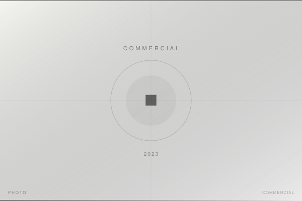

2023 / COMMERCIAL / CORPORATE
コーポレートサイト用プロフィール写真撮影
複数企業・個人
独立後の活動が軌道に乗り、コーポレートサイト用プロフィール写真の依頼が年々増加。白ホリスタジオでの撮影を通じて、ビジネスパーソンの「その人らしさ」を引き出すライティングと対話の積み重ねが商業実績につながっている。
担当：スチール撮影 / ライティング設計 / デジタル現像
Leica SL2
- Photographer
- 森川亮太 (M.RYOHTA / @m_ichirinka)
Instagram: @m_ichirinka (2023.05.10) ↗
